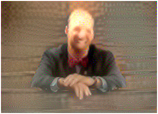
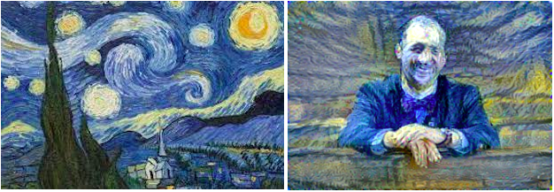
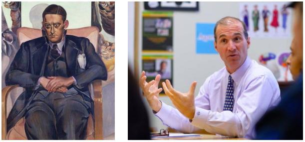
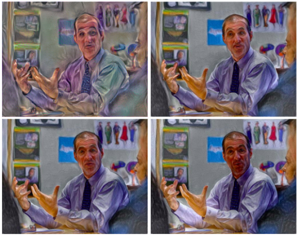
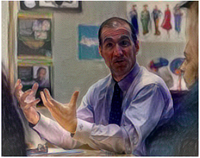
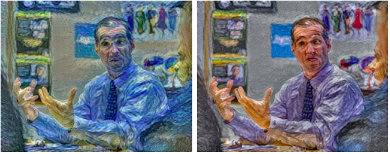

With our primary goal to give Mr. Bland his own portrait, we found a portrait of a previous headmaster, William Lusk, to stylize a picture of Mr. Bland in the Chapel that somewhat mimicked the style portrait. The two images below are what we trained initially:

The result was blurred and no features were well defined. In addition, the color was not preserved very well. The mahogany brown background of the content image was dulled down. And none of Mr. Bland’s facial features were retained. This style transfer was not meeting any of our goals, and this poor result was likely due, in part, to the lack of “style” of the initial painting itself. It has only a basic background, and the portrait itself is lifelike; no distinct artists’ style could be drawn. The result can be seen below:

In addition to the problem with the style, the content was part of the problem. The image, perhaps due to its lack of contrast and light coloring, even with a distinct style like Starry Night, one of the most common style transfer styles, still produced a non-defined content transfer at 25 thousand iterations:

So, to try something new for the goal of our desired result, we tried a new content and a new style. We abandoned the Lusk portrait and the chapel picture and tried a picture of Mr. Bland in the classroom as it had brighter lighting. We thought the dark lighting and dark background that also matched the dark background of the style might have hindered the appropriate color-preserved style transfer. So we decided, sans another portrait of a headmaster, to try another Milton legend, and perhaps its most famous, T.S. Eliot. These photos were the two new style and then content images, respectively:

The results of this style transfer were much more promising. Given that the program runs 100 iterations in about one minute, we tried various iteration numbers with a GeForce 1060 GPU. The results were below, from left-to-right top-to-bottom, at 100, 500, 1000, 25000 iterations -- all with color preserved. At 25,000 iterations, the shadows start to become prevalent again and the facial structure becomes clearer. These shadows make the face look darker, and thus indicates that the color is not being preserved as well. And when looking at the green on the wall, the more iterations seemed to dilute the preservation of color -- while the features of the face became more defined.

At 25,000 iterations without color preservation, the result, as a whole, was darker. The green in the background was darkened and the shadowing on Mr. Bland’s face was more pronounced, and, thus, his features are less defined.

As a control, to make sure the color preservation of this repo was working distinctly and accurately, we tested the same content image with Starry Night -- with and without color preservation. The sans-color-preserved result had the starry blue across the image, while the color-preserved result had the same style across the image with color distinctly preserved (at 1000 iterations):
